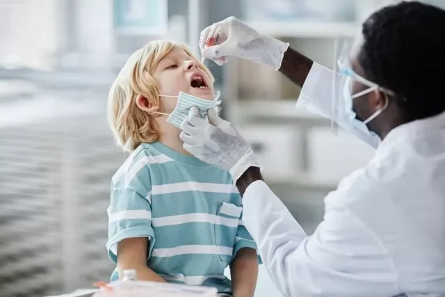

Vacina da Poliomielite (VIP/VOP):
para que serve, quando tomar e doses
A vacina contra poliomielite é indicada para prevenir o desenvolvimento da paralisia infantil, que pode causar comprometimento do sistema nervoso e levar à paralisia de membros e alterações motoras na criança.
Existem dois tipos de vacina contra a poliomielite, a VIP e a VOP, que protegem a criança contra 3 tipos diferentes do vírus que causam esta doença, sendo oferecidas gratuitamente pelo SUS devendo ser aplicada nos postos de saúde por um profissional de saúde.
A vacina contra poliomielite é dada em 3 doses com vacina VIP injetável até os 6 meses e depois outras 2 doses de reforço da vacina até os 5 anos, que pode ser tanto por via oral, que é a vacina VOP, ou injetável (VIP), sendo esta a forma mais indicada.

Quando tomar a vacina
A vacina contra a paralisia infantil deve ser feita a partir do 2º mês de vida e até os 5 anos de idade.
No entanto, pessoas que não fizeram esta vacina podem fazer a vacinação, mesmo na idade adulta.
Tipos de vacina contra poliomielite
Existem dois tipos de vacina contra a poliomielite que são:
1. Vacina VIP
A vacina VIP (Vacina Injetável da Poliomielite) contém o vírus da paralisia infantil inativado, protegendo o bebê contra os subtipos 1, 2 e 3 do vírus, sendo capaz de estimular o sistema imunológico do bebê a produzir anticorpos contra o vírus.
Essa vacina é aplicada através de injeção no músculo ou sob a pele, em bebês a partir dos 2 meses de idade, em 3 doses, com intervalo de 2 meses entre as doses.
A vacina VIP também pode ser aplicada em crianças ou adultos que não recebera nenhuma dose da vacina contra poliomielite, ou como dose de reforço.
2. Vacina VOP
A vacina VOP (Vacina Oral da Poliomielite) contém o vírus da paralisia infantil vivo atenuado, o que significa que o vírus está enfraquecido, sendo capaz de estimular uma resposta imunológica contra o vírus, porém não há desenvolvimento da doença, pois o vírus está enfraquecido, com a sua atividade diminuída.
Doses da vacina contra poliomielite
A vacinação completa contra poliomielite infantil deve ser feita de acordo com o seguinte esquema:

As doses de reforço também podem ser feitas com a VIP, em crianças que tenham recebido as 3 doses iniciais com essa vacina.
Crianças que não tenham recebido as 3 primeiras doses da vacina VIP, não devem receber a vacina VOP, assim como crianças que estejam hospitalizadas e que tenham o sistema imunológico enfraquecido.
Cuidados ao tomar a vacina da poliomielite
As 3 primeiras doses da vacina da poliomielite (paralisia infantil) devem sempre ser feitas com a vacina VIP, que tem o vírus inativado, ou seja, contém tem partículas do vírus que são capazes de estimular o sistema imunológico a produzir anticorpos, sem causar a doença.
Isso porque a vacina oral (VOP) é composta pelo vírus enfraquecido, ou seja, caso a criança tenha alguma alteração imunológica, pode haver a ativação do vírus e resultar na doença, principalmente se as primeiras doses não foram tomadas.
No caso do calendário de vacinação ser seguido corretamente, o uso da vacina VOP como reforço durante os períodos de campanha de vacinação é considerado seguro.
Todas as crianças até aos 5 anos devem participar no programa de vacinação contra a poliomielite e é importante que os pais levem a caderneta de imunização para registrar a administração das vacinas.
Como deve ser o preparo
Para tomar a vacina injetável (VIP) não é necessário qualquer tipo de preparo especial, no entanto, caso o bebê faça a vacina oral (VOP) é aconselhado interromper a amamentação até 1 hora antes, para evitar o risco de golfar.
Quando não tomar a vacina
A vacina contra a poliomielite não deve ser administrada em crianças com o sistema imunológico enfraquecido, causado por doenças como AIDS, câncer ou após transplante de órgãos, por exemplo. Nesses casos, a crianças deve ir primeiro ao pediatra e caso este indique a imunização contra a poliomielite, deve-se fazer a vacina em Centros de Referência de Imunobiológicos Especiais.
A vacinação (VIP ou VOP) deve ser adiada no caso da criança apresentar febre acima de 38ºC. A VOP também não deve ser administrada se a criança tiver vômitos ou diarreia, pois a absorção pode não ocorrer corretamente.

Além disso, a vacina não está recomendada para crianças que desenvolveram poliomielite após a administração de alguma das doses anteriores da vacina.
A vacina oral contra a poliomielite (VOP) também não é indicada para crianças que não tomaram as três doses da vacina injetável (VIP), sendo importante que o pediatra seja consultado para que seja avaliado o melhor esquema vacinal.
Possíveis efeitos colaterais da vacina
A vacina contra a paralisia infantil raramente apresenta efeitos colaterais, no entanto, em alguns casos pode ocorrer febre, mal estar, diarreia e dor de cabeça.
Caso a criança comece a apresentar sintomas de paralisia, que é uma complicação extremamente rara, os pais devem levá-la ao hospital o mais rápido possível.
Além desta vacina, a criança precisa de tomar outras como, como é o caso da vacina contra a Hepatite B ou Rotavírus, por exemplo.